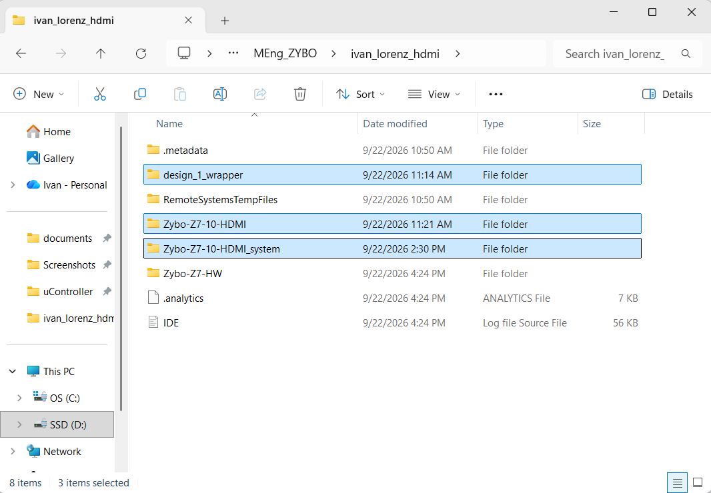
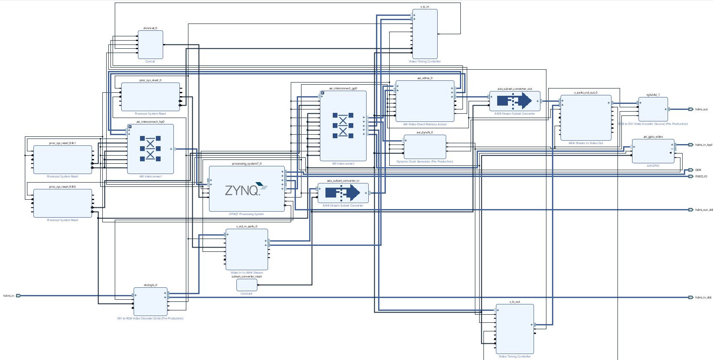

Baseline: a fresh Digilent demo
The working build starts from Digilent's own release archives, not from a hand-edited design.
02.1Start from Digilent's release archives
What I did
- Download the demo from Digilent's Zybo Z7 HDMI demo page and extract the Zybo-Z7-10-HDMI release: the hardware archive (
Zybo-Z7-10-HDMI-hw.xpr.zip→ Vivado projectZybo-Z7-HW) and the software archive (Zybo-Z7-10-HDMI-sw.ide.zip→ Vitis workspace with platformdesign_1_wrapper, appZybo-Z7-10-HDMI, system project). - Open
Zybo-Z7-HW.xprin Vivado 2024.1. The archive already carries the Digilent IP repository (axi_dynclk,rgb2dvi,dvi2rgb,tmds) inZybo-Z7-HW.ipdefs/repo/vivado-library.
Why
A vendor-supplied, known-good baseline is easier to reason about than a hand-modified design, and every later problem can be attributed to the added IP or software.
Figure (text only). Opening Zybo-Z7-HW.xpr in Vivado 2024.1 shows the stock design_1 block diagram (next figure).

02.2What the stock block design contains
What I did
- PS7 with GP0 (control) and HP0 (video DMA);
axi_interconnect_gp0for AXI-Lite slaves;axi_interconnect_hp0for the VDMA. - TX chain:
axi_vdma_0→axis_subset_converter_out→v_axi4s_vid_out_0(+v_tc_out) →rgb2dvi_1; pixel clock fromaxi_dynclk_0. - RX chain (unused by my app, left in place):
dvi2rgb_0,v_tc_in,v_vid_in_axi4s_0,axi_gpio_video. - Stock AXI-Lite addresses:
axi_vdma_00x43000000,axi_dynclk_00x43C00000,v_tc_in0x43C10000,v_tc_out0x43C20000,axi_gpio_video0x41200000.
Why
The custom IP has to slot in next to these without disturbing the video path; knowing the map avoids address clashes.

← 01 Environment · 03 The Lorenz IP →
Generated from the project's chat history, git log and source files. Screenshots live in
docs-site/figures/ (see its README).